Update (2022-08-01): The code in this post has been updated to support Python 3, mainly by employing explicit integer division operators. The complete working code is available here.
Earlier this week I've discussed efficient algorithms for exponentiation.
However, for real-life needs of number theoretic computations, just raising numbers to large exponents isn't very useful, because extremely huge numbers start appearing very quickly [1], and these don't have much use. What's much more useful is modular exponentiation, raising integers to high powers 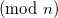 [2]
Luckily, we can reuse the efficient algorithms developed in the previous article, with very few modifications to perform modular exponentiation as well. This is possible because of some convenient properties of modular arithmetic.
Modular multiplication
Given two numbers, a and b, their product modulo n is 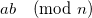. Consider the number x < n, such that 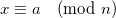. Such a number always exists, and we usually call it the remainder of dividing a by n. Similarly, there is a y < b, such that 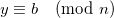. It follows from basic rules of modular arithmetic that 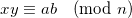 [3]
Therefore, if we want to know the product of a and b modulo n, we just have to keep their remainders when divided by n. Note: a and b may be arbitrarily large, but x and y are always smaller than n.
A naive algorithm
What is the most naive way you can think of for raising computing 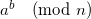? Raise a to the power b, and then reduce modulo n. Right?
Indeed, this is a very unsophisticated and slow method, because raising a to the power b can result in a really huge number that takes long to compute.
For any useful number, this algorithm is so slow that I'm not even going to run it in the tests.
Using the properties of modular multiplication
As we've learned above, modular multiplication allows us to just keep the intermediate result at each step. Here's the implementation of a simple repeated multiplication algorithm for computing modular exponents this way:
def modexp_mul(a, b, n):
r = 1
for i in xrange(b):
r = r * a % n
return r
It's much better than the naive algorithm, but as we saw in the previous article it's quite slow, requiring b multiplications (and reductions modulo n).
We can apply the same modular reduction rule to the more efficient exponentiation algorithms we've studied before.
Modular exponentiation by squaring
Here's the right-to-left method with modular reductions at each step.
def modexp_rl(a, b, n):
r = 1
while 1:
if b % 2 == 1:
r = r * a % n
b //= 2
if b == 0:
break
a = a * a % n
return r
We use exactly the same algorithm, but reduce every multiplication . So the numbers we deal with here are never very large.
Similarly, here's the left-to-right method:
def modexp_lr(a, b, n):
r = 1
for bit in reversed(_bits_of_n(b)):
r = r * r % n
if bit == 1:
r = r * a % n
return r
With _bits_of_n being, as before:
def _bits_of_n(n):
""" Return the list of the bits in the binary
representation of n, from LSB to MSB
"""
bits = []
while n:
bits.append(n % 2)
n //= 2
return bits
Relative performance
As I've noted in the previous article, the RL method does a worse job of keeping its multiplicands low than the LR method. And indeed, for smaller n, RL is somewhat faster than LR. For larger n, RL is somewhat slower.
What's obvious is that now the built-in pow is superior to both hand-coded methods [4]. My tests show it's anywhere from twice to 10 times as fast.
Why is pow so much faster? Is it only the efficiency of C versus Python? Not really. In fact, pow uses an even more sophisticated algorithm for large exponents [5]. Indeed, for small exponents the runtime of pow is similar to the runtime of the implementations I presented above.
The k-ary LR method
It turns out that the LR method of repeated squaring can be generalized. Instead of breaking the exponent into bits of its base-2 representation, we can break it into larger pieces, and save some computations this way.
I'll present the k-ary LR method that breaks the exponent into its "digits" in base 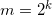 for some integer k. The exponent can be written as:
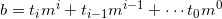
Where 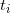 are the digits of b in base m. 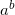 is then:
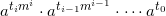
We compute this iteratively as follows [6]:
Raise 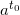 to the m-th power and multiply by 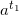. We get 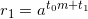. Next, raise 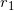 to the m-th power and multiply by 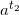, obtaining 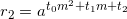. If we continue with this, we'll eventually get .
This translates into the following code:
def modexp_lr_k_ary(a, b, n, k=5):
""" Compute a ** b (mod n)
K-ary LR method, with a customizable 'k'.
"""
base = 2 << (k - 1)
# Precompute the table of exponents
table = [1] * base
for i in xrange(1, base):
table[i] = table[i - 1] * a % n
# Just like the binary LR method, just with a
# different base
#
r = 1
for digit in reversed(_digits_of_n(b, base)):
for i in xrange(k):
r = r * r % n
if digit:
r = r * table[digit] % n
return r
Note that we save some time by pre-computing the powers of a for exponents that can be digits in base m. Also, the _digits_of_n is the following generalization of _bits_of_n:
def _digits_of_n(n, b):
""" Return the list of the digits in the base 'b'
representation of n, from LSB to MSB
"""
digits = []
while n:
digits.append(n % b)
n //= b
return digits
Performance of the k-ary method
In my tests, the k-ary LR method with k = 5 is about 25% faster than the binary LR method, and is within 20% of the built-in pow function.
Experimenting with the value of k affects these results, but 5 seems to be a good value that produces the best performance in most cases. This is probably why it's also used as the value of k in the implementation of pow.
Python's built-in pow
I've mentioned Python's pow function several times in this article. The Python version I'm talking about is 2.5, though I doubt this functionality has changed in 2.6 or 3.0. The pow I'm interested in is implemented in the long_pow function in objects/longobject.c in the Python source code distribution. As mentioned in [5], it uses the binary LR method for small exponents, and the k-ary LR method for large exponents.
These implementations follow closely algorithms 14.79 and 14.82 in the excellent Handbook of Applied Cryptography, which is freely available online.
Summary
As we've seen, exponentiation and modular exponentiation are one of those applications in which an efficient algorithm is required for feasibility. Using the trivial/naive algorithms is possible only for small cases which aren't very interesting. To process realistically large numbers (such as the ones required for cryptographic algorithms), one needs powerful methods in his toolbox.

| [1] | For instance, 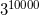 is a 4772-digit number. |
| [2] | Modular exponentiation is essential for the RSA algorithm, for example. |
| [3] | To be a bit more rigorous, we start with . This means that 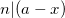, so also 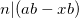. Similarly 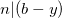, so also 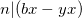. Adding these two we get 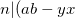), which means that . |
| [4] | Using the 3-argument form of pow, you can perform modular exponentiation. |
| [5] | FIVEARY_CUTOFF in the code of pow is set to 8. This means that for exponents with more than 8 digits, a special 5-ary algorithm is used. For smaller exponents, the regular LR binary method is used - just like the one I presented, just coded in C. |
| [6] | Note that for m = 2 this is the familiar binary LR method. |